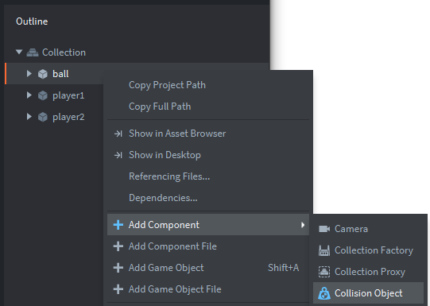
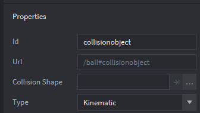
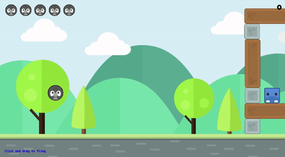
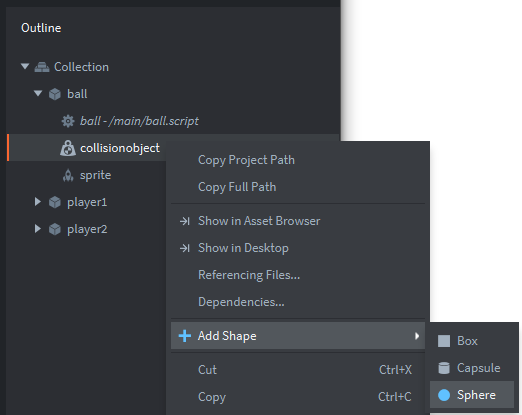
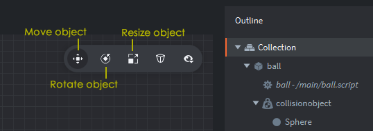
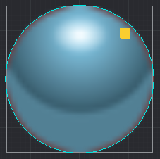

Tutorials for 2D games projects
Pong | Creating the collision objects.
To make the ball bounce off the paddle we're going to create a collision object attached to the paddle, and a collision object attached to the ball. When two collision objects hit each other, it triggers a message that can be listened to in the on_message function of an object. This is a common object-oriented technique to ensure encapsulation of attributes; one object should not be able to interfere with the properties of another.
Collision objects are extremely powerful in Defold. It uses Box2D and Bullet 3D physics engines built into the IDE, which are industry standards. In Pong we'll keep it really simple, but full simulations of Newtonian physics are possible with very little code.
- In the assets panel, double click the main.collection file. In the outline panel, right click the ball object and choose, 'Add Component', 'Collision Object'.

- You will notice a number of properties for the collision object. It can do many things! Change the type property to, 'Kinematic'.


Consider a game such as Angry Birds where birds are slingshot into support beams. The beams fall into each other in a believable way when hit. It would be a real challenge to program the physics. Today, games programmers use libraries to achieve this. There is little point reinventing the wheel! By setting the type property to dynamic in Defold, the engine solves all collisions and applies resulting forces. Dynamic objects are good for objects that should behave realistically but you cannot directly manipulate the position and orientation of a dynamic object. The only way to affect them is indirectly, by applying forces.Kinematic objects react to collisions with other objects, but the physics engine does not perform any automatic simulation. The job of resolving collisions, or ignoring them, is left to you. Kinematic objects are used for player or script controlled objects that require fine grained control of the physical reactions, like a player character.
Collision objects require a shape that defines what is called a 'hit box'. The area in which a collision is detected. There are three options in Defold: box, capsule or sphere. A box is great for objects that are roughly square or rectangular in shape, capsules are great for cylindrical shapes, and spheres are ideal for objects that are primarily circular. However, capsules can only be used with 3D not 2D physics.
Since our ball is a circle shape, it makes sense to use a sphere. Later we will use a box for the paddles. The type of hit box you choose will determine how accurate your collision detection is. Whilst you could use what is known as 'pixel perfect' collision detection where objects must collide exactly, this is not very performant and therefore games will often use approximate shapes for detecting collisions instead to maximise the game speed and frame rate. Ever been in a situation in a game where you feel you shouldn't really have died? That's hit boxes!
- In the outline panel, right click the collisionobject for the ball and choose, 'Add shape', 'Sphere'.

- A circle will appear in the editor panel over the top of the ball. Remember you can zoom in by clicking on an object and pressing F, or zoom out by clicking anywhere on the canvas and pressing F. Have a quick go at this to become familiar with it, because it is useful to zoom in to objects to set their hit boxes, and zoom out to see the whole game screen.
You should notice that there are some object controls to the left of the outline panel. By default 'move object' is selected, enabling you to move an object on the canvas.

Because the collision object sphere is not the same size as the ball, we need to use the resize tool to make it bigger. However, be careful here, because you might accidently resize the ball itself and not the collision sphere!
- In the outline panel, click the Sphere object and then click the resize object control.
- Hold the left mouse button over the top of the yellow or orange square and drag the sphere out to match the shape of the ball.

- Save the objects at this stage by pressing CTRL-S, or File... Save all.
- You now need to repeat this process for each of the player paddle game objects, using a box instead of a sphere. Go ahead and do this on your own.
Summary of the steps to take for each player:
- In the outline panel, right click the player1 or player2 game object and select, 'Add component', 'Collision Object'.
- In the properties panel, change the physics type to 'Kinematic'.
- In the outline panel, right click the collisionobject and choose, 'Add Shape', 'Box'.
- In the editor click the resize control.
- Zoom in by pressing F. You may need to zoom out just a little to see the complete paddle. You can do this with the mouse wheel.
- In the outline panel, click the box (otherwise you are resizing the paddle and not the hit box).
- In the editor use the handles (small squares) to resize the box to fit the paddle. You don't need a perfect match, just as close as possible.
- Save the changes by pressing CTRL-S or 'File', 'Save All'.
Nothing has actually changed with our scripts at this stage so if you run the program you won't notice any difference. We are now ready to capture the messages being sent and react to the collision. Stage 7b >
 Craig'n'Dave | Version 1.3
Craig'n'Dave | Version 1.3